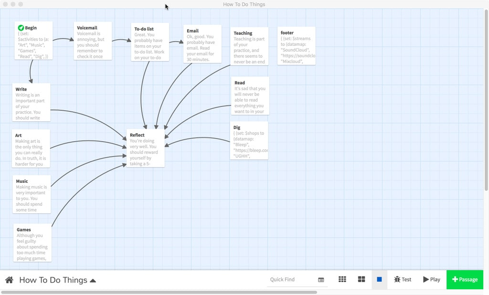

You can't put ten pounds of shit in a five-pound bag.
Probably like a bunch of creative folks out there I've got a to-do list a mile long, thousands of unread emails (currently I'm at 16k+), and a calendar that leaves little room for things like eating and sleeping. I'm also the kind of person that needs to wander: creatively, mentally, and physically. If I don't make time to wander, it'll happen anyway; I'll get distracted and unable to focus. However like everybody else I have only so much attention I can pay out to things.
If you are like me, you've tried a number of different systems, methods, and strategies for managing your time. It's a kind of art form in itself. I've also gone in the other direction completely, letting myself wander and letting go of attachment to time and just doing whatever, whenever. And probably this is actually the right thing for me to do. However, I don't have the luxury to spend all my time wandering, so I have to spend a good chunk of my time doing shit.
Sometimes the shit is really shit, and sometimes it isn't, but from the objective standpoint of a system it's all just a set of things to pay attention to. So it becomes the job of the system to determine how much attention to pay to what and when so things are managed and maintained properly.
With the exception of the occasional appointment, this problem space for me only truly exists in the digital domain. In the studio I don't have this problem — I simply do things and I'm perfectly happy. Unfortunately, given my circumstances if I spend all my time in the studio I won't have money to pay the rent on said studio or buy things like food. So I need to check email and prepare for classes and such things.
Since this is essentially a system design problem in a digital domain, I decided to treat it as a digital game design challenge. Basically what I'm dealing with is simple state machine logic — start at A, proceed to B, then C or D based on some criteria. The format I wanted was something like a choose-your-own-adventure book (with minimal choices), so I decided to use Twine. I started thinking about various tasks/activities and how I wanted to navigate between them.

Twine is a great tool for this sort of thing, where the branching logic is relatively simple and has discrete steps. Being text-based, it also means I have an interesting opportunity to write objectively to myself. This actually works quite well. I can write "you are doing a great job" and my brain will go "I am doing a great job" and I'll feel more satisfied than if I were just checking a box on a to-do list.
The system also calls into question the value of various activities relative to the time spent. When I first built the system I weighted all things equally to see how it'd work. I set the "game" up so that I would write first, because I really haven't been doing enough writing, and if I don't make time for it, it'll never happen. So I would write for 30 minutes (usually 10-20 minutes of staring at the screen and 10 minutes of actual writing). Then I would go into frog-eating mode and jump on "work-related" activities like email and lesson-planning. I like the Pomodoro Technique, so I try to work in 30-minute chunks with breaks in-between.
Equal weighting means I would spend just as much time on email as I would on art, or music, or any other creative work. So if time equates to value (which is a common view of time in industrialized society), then email becomes just as valuable as art-making, at least as far as the system is concerned. I don't personally agree with this at all, but for the sake of the experiment I feel obliged to see how it plays out.
Not surprisingly, my writing practice was going fairly well. I was writing almost every day (I would reset the system daily, so writing would bubble to the top). I no longer felt like I wasted my whole day on email, and rather than continue to kick creative projects down the road, I would carve out time to work on them.
Unfortunately this resulted in having email pile up and lesson-planning languish. The sad truth is email comes in faster than I can process it, hence the 16k+ unread emails in my inbox. There are also the read emails that need some kind of follow-up, adding more to the pile. I was also teaching six different classes in three different places, which created another seemingly endless stream of work.
I decided to pay more attention to "work" activities and less to "things that don't look like work". The first step was to lump all the "activities that don't look like work" together into a single sub-cycle, which meant I would proceed through each "work" activity (email, lesson-planning, etc.), then spend time doing a single "non-work" activity (writing, art, music, research, etc.), then cycle back through all the work activities (and repeat).
However, what seemed to happen (anecdotally as I have not been consistently tracking activity data) is I simply never got around to doing any non-work activity. I basically on average would get three pomodoros into each "digital workday", regardless of activity. Side note: there isn't a strict 1:1 relationship between pomodoros and time, since I often finish up the task I'm working on or get to a good stopping point before moving on to the next activity.
It appears that on-average using a sub-cycle of non-work activities doesn't make any difference and merely devalues non-work activities within the context of the system. Worse, I stopped writing regularly, and much of my efforts here are to increase the regular attention paid to non-work activities by limiting regular attention paid to work.